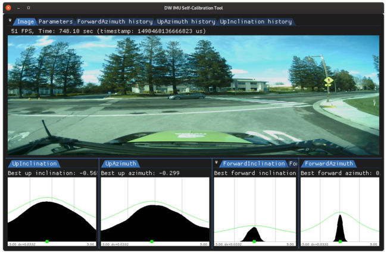
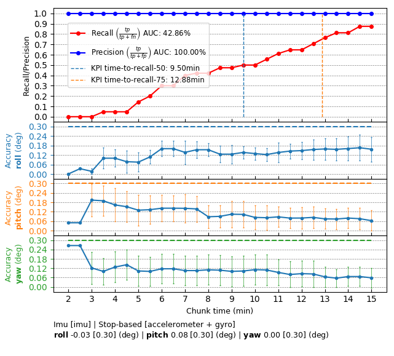

IMU Calibration - Operating Principle
IMU calibration involves the estimation of the three angles aligning the IMU coordinate frame to the vehicle coordinate frame: roll, pitch, and yaw. All three angles are crucial to correctly estimate and predict the vehicle's pose when egomotion is used in DW_EGOMOTION_IMU_ODOMETRY mode (for more details, see Egomotion). The three angles are computed by processing the data sensed by the linear accelerometer and the gyroscope sensors embedded in the IMU device. Common driving maneuvers must be performed in order to excite the accelerometer and the gyroscope sensors along their three axes in order to make all three angles to be estimated observable.
IMU Roll
In order to calibrate the IMU roll, the vehicle must perform several turns. Turns are automatically detected by the magnitude of the gyroscope excitation. In order to mitigate the influence of sensor noise, the gyroscope data is smoothed prior to processing. Roll corresponding to the gyroscope rotation is sampled into a histogram, mode of which, defines the estimated roll angle.
IMU Pitch and Yaw
The pitch and yaw of the IMU are computed by using the linear accelerometer. In order to identify a forward acceleration, episodes of starts from static conditions, e.g, restarting at a traffic light or in a traffic jam, are automatically detected. In order to mitigate the influence of sensor noise, the accelerometer data is smoothed prior to processing. Employing the same histogram voting scheme as before, the pitch and yaw calibration angles are estimated in a robust way (see histograms below).

Up estimation histograms (left) and forward estimation histograms (right) of an IMU calibration, collected over a period of time
Requirements
Initialization Requirements
- Nominal values on IMU calibration
- Orientation(roll/pitch/yaw): roll less than 10 degree error, pitch and yaw less than 5 degree error
- Position(x/y/z): not used
Runtime Calibration Dependencies
Input Requirements
- Assumption: Vehicle performs the aforementioned maneuvers until calibration convergence.
- Speed measurements: Must be provided as part of dwVehicleIOState, see VehicleIO for details
Output Requirements
- Corrected roll/pitch/yaw value: less than 0.4 degrees accuracy
- Time to correction: 11 minutes
Cross-validation KPI
Several hours of data are used to produce a reference calibration value for cross-validation. Then, short periods of data are evaluated for whether they can recover the same values. For example, the graph below shows precision/recall curves of IMU self-calibration. Precision indicates that an accepted calibration is within a fixed precision threshold from the reference calibration, and recall indicates the ratio of accepted calibrations in the given amount of time.

Workflow
The following code snippet shows the general structure of a program that performs IMU self-calibration
while(true)
{
}
DW_API_PUBLIC dwStatus dwVehicleIO_getVehicleActuationFeedback(dwVehicleIOActuationFeedback *const actuationFeedback, dwVehicleIOHandle_t const obj)
Retrieve current vehicle actuation feedback.
DW_API_PUBLIC dwStatus dwVehicleIO_getVehicleNonSafetyState(dwVehicleIONonSafetyState *const nonSafeState, dwVehicleIOHandle_t const obj)
Retrieve current vehicle non-safety state.
DW_API_PUBLIC dwStatus dwVehicleIO_consumeCANFrame(dwCANMessage const *const msg, uint32_t const sensorId, dwVehicleIOHandle_t const obj)
Parse a received event.
DW_API_PUBLIC dwStatus dwCalibrationEngine_getCalibrationStatus(dwCalibrationStatus *status, dwCalibrationRoutineHandle_t routine, dwCalibrationEngineHandle_t engine)
Returns the current status of a calibration routine.
DW_API_PUBLIC dwStatus dwCalibrationEngine_addVehicleIOActuationFeedback(dwVehicleIOActuationFeedback const *vioActuationFeedback, uint32_t sensorIndex, dwCalibrationEngineHandle_t engine)
Adds dwVehicleIOActuationFeedback to calibration engine.
DW_API_PUBLIC dwStatus dwCalibrationEngine_addIMUFrame(const dwIMUFrame *imuFrame, uint32_t sensorIndex, dwCalibrationEngineHandle_t engine)
Adds an IMU frame from an IMU sensor to the calibration engine.
DW_API_PUBLIC dwStatus dwCalibrationEngine_initialize(dwCalibrationEngineHandle_t *engine, dwRigHandle_t rig, dwContextHandle_t context)
Creates and initializes a Calibration Engine.
DW_API_PUBLIC dwStatus dwCalibrationEngine_addVehicleIONonSafetyState(dwVehicleIONonSafetyState const *vioNonSafetyState, uint32_t sensorIndex, dwCalibrationEngineHandle_t engine)
Adds dwVehicleIONonSafetyState to calibration engine.
DW_API_PUBLIC dwStatus dwCalibrationEngine_getSensorToRigTransformation(dwTransformation3f *sensorToRig, dwCalibrationRoutineHandle_t routine, dwCalibrationEngineHandle_t engine)
Returns the current sensor to rig transformation of a calibration routine estimating this transformat...
DW_API_PUBLIC dwStatus dwCalibrationEngine_startCalibration(dwCalibrationRoutineHandle_t routine, dwCalibrationEngineHandle_t engine)
Starts a calibration routine associated with a calibration engine.
DW_API_PUBLIC dwStatus dwCalibrationEngine_stopCalibration(dwCalibrationRoutineHandle_t routine, dwCalibrationEngineHandle_t engine)
Stops a calibration routine associated with a calibration engine.
DW_API_PUBLIC dwStatus dwCalibrationEngine_initializeIMU(dwCalibrationRoutineHandle_t *routine, const uint32_t imuIndex, const uint32_t canIndex, const dwCalibrationIMUParams *params, dwCalibrationEngineHandle_t engine)
Initializes an IMU calibration routine designated by the sensor provided to the method.
DW_API_PUBLIC dwStatus dwSensorCAN_readMessage(dwCANMessage *const msg, dwTime_t const timeoutUs, dwSensorHandle_t const sensor)
Reads a CAN packet with a given timeout from the CAN bus.
DW_API_PUBLIC dwStatus dwSensorIMU_readFrame(dwIMUFrame *const frame, dwTime_t const timeoutUs, dwSensorHandle_t const sensor)
Reads the next IMU frame from the sensor within a given timeout.
This workflow is demonstrated in the following sample: IMU Calibration Sample